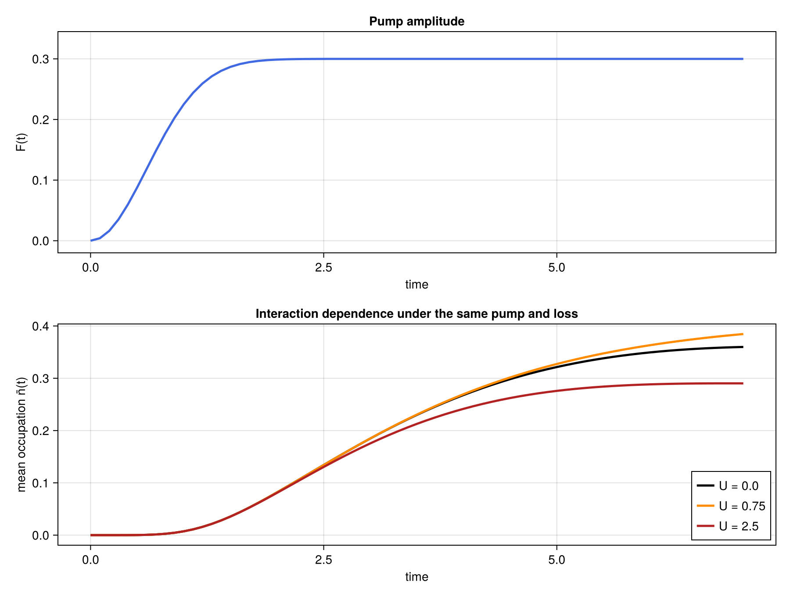

Driven-dissipative Bose–Hubbard dynamics
How does the onsite interaction change the mean occupation of a coherently pumped Bose–Hubbard chain with local particle loss? The observable is $\bar n(t)$. $F(t)$ is the coherent pump amplitude, held on the same schedule while $U$ changes.
The two-panel figure below is generated by scripts/driven_dissipative_bose_hubbard.jl. This page evolves one interaction, $U=0.75$.
Model
In a frame rotating with the pump, and with $\hbar=1$,
\[H(t) = -J\sum_{j=1}^{N-1} \left( a_j^\dagger a_{j+1} + a_{j+1}^\dagger a_j \right) -\Delta\sum_{j=1}^{N}n_j +\frac{U}{2}\sum_{j=1}^{N}n_j(n_j-1) +F(t)\sum_{j=1}^{N}\left(a_j+a_j^\dagger\right).\]
$F(t)$ displaces every mode coherently. Hopping moves particles between sites. It does not create them. Local loss is
\[\frac{d\rho}{dt} = -i[H(t),\rho] + \kappa\sum_{j=1}^{N}\mathcal{D}[a_j]\rho,\]
with
\[\mathcal{D}[a_j]\rho = a_j\rho a_j^\dagger -\frac12\{a_j^\dagger a_j,\rho\}.\]
The chain starts in the vacuum. The monitored density is
\[\bar n(t) = \frac{1}{N}\sum_{j=1}^{N}\operatorname{Tr}[n_j\rho(t)].\]
The pump envelope is
\[F(t) = F_0\left[ 1-\exp\left(-\frac{t^2}{2\tau^2}\right) \right].\]
Parameters and setup
using ITensors
using ProcessTensors
const N = 4
const local_dim = 3
const hopping = 0.5
const detuning = 0.0
const interaction = 0.75
const pump_strength = 0.30
const ramp_time = 0.6
const loss_rate = 0.8
const dt = 0.1
const final_time = 5.0
const maxdim = 60
const cutoff = 1e-10
physical_sites = siteinds("Boson", N; dim=local_dim, conserve_qns=false)
liouville_sites = liouv_sites(physical_sites)
initial_state = MPS(physical_sites, fill("0", N))
initial_density = to_dm(initial_state)
initial_density_liouville =
to_liouville(initial_density; sites=liouville_sites)4-element MPS{Liouville}
site dims: 9, 9, 9, 9
link dims: 1, 1, 1
maxlinkdim: 1
combiners: 4 ITensors
tensors:
[1] ((dim=1|id=75|"Link,l=1"), (dim=9|id=258|"Liouv,Site,n=1,ptype=Boson"))
[2] ((dim=1|id=402|"Link,l=2"), (dim=1|id=75|"Link,l=1"), (dim=9|id=373|"Liouv,Site,n=2,ptype=Boson"))
[3] ((dim=1|id=85|"Link,l=3"), (dim=1|id=402|"Link,l=2"), (dim=9|id=749|"Liouv,Site,n=3,ptype=Boson"))
[4] ((dim=1|id=85|"Link,l=3"), (dim=9|id=284|"Liouv,Site,n=4,ptype=Boson"))
The tuple (rate, operator, site) adds rate * D[operator] on that site. The jumps stay fixed while the Hamiltonian is rebuilt at each midpoint.
loss_jump_operators = [
(loss_rate, "A", j) for j in 1:N
]
mean_occupation_operator = let observable = OpSum()
for j in 1:N
observable += 1 / N, "N", j
end
observable
end
mean_occupation_liouville = to_liouville(
MPO(mean_occupation_operator, physical_sites);
sites=liouville_sites,
)
@assert isapprox(real(tr(initial_density)), 1.0; atol=1e-12)driven_bose_hubbard_hamiltonian(t) is the OpSum at time t. The interaction uses $n(n-1)=n^2-n$.
pump_amplitude(t::Real) =
pump_strength * (
1 - exp(-(t^2) / (2 * ramp_time^2))
)
function driven_bose_hubbard_hamiltonian(t::Real)
pump = pump_amplitude(t)
H = OpSum()
for j in 1:(N - 1)
H += -hopping, "Adag", j, "A", j + 1
H += -hopping, "A", j, "Adag", j + 1
end
for j in 1:N
H += -detuning, "N", j
H += interaction / 2, "N", j, "N", j
H += -interaction / 2, "N", j
H += pump, "A", j
H += pump, "Adag", j
end
return H
enddriven_bose_hubbard_hamiltonian (generic function with 1 method)Midpoint Liouville TDVP
The vectorized density matrix obeys
\[\frac{d}{dt}|\rho(t)\rangle\rangle = \mathcal{L}(t)|\rho(t)\rangle\rangle .\]
On each interval $[t_n,t_n+\Delta t]$ the step holds
\[\mathcal{L}_{n+\frac12} = \mathcal{L}\left(t_n+\frac{\Delta t}{2}\right)\]
fixed. liouvillian_mpo builds that generator from the midpoint OpSum and the loss jumps, and tdvp advances the Liouville MPS by the real interval dt.
nsteps = round(Int, final_time / dt)
times = collect(range(0.0; step=dt, length=nsteps + 1))
trajectory = let
density = copy(initial_density_liouville)
occupations = Float64[]
trace_errors = Float64[]
bond_dimensions = Int[]
for step in eachindex(times)
density_trace = tr(to_hilbert(density))
push!(
occupations,
real(inner(mean_occupation_liouville, density) / density_trace),
)
push!(trace_errors, abs(density_trace - 1))
push!(bond_dimensions, maxlinkdim(density))
step == length(times) && continue
midpoint = times[step] + dt / 2
L_mid = liouvillian_mpo(
driven_bose_hubbard_hamiltonian(midpoint),
liouville_sites;
jump_ops=loss_jump_operators,
)
density = tdvp(
L_mid,
dt,
density;
time_step=dt,
nsite=2,
maxdim=maxdim,
cutoff=cutoff,
outputlevel=0,
)
end
(
occupations=occupations,
trace_errors=trace_errors,
bond_dimensions=bond_dimensions,
)
end
println((
U=interaction,
final_time=final_time,
final_n=trajectory.occupations[end],
max_trace_error=maximum(trajectory.trace_errors),
max_bond_dimension=maximum(trajectory.bond_dimensions),
))
@assert all(isfinite, trajectory.occupations)
@assert all(
n -> -1e-8 ≤ n ≤ local_dim - 1 + 1e-8,
trajectory.occupations,
)
@assert maximum(trajectory.trace_errors) < 1e-2(U = 0.75, final_time = 5.0, final_n = 0.18850176609275862, max_trace_error = 0.00033144378834161373, max_bond_dimension = 30)
What the occupation shows
The cells above use one value, $U=0.75$, on $N=4$ sites with local_dim=3, hopping $0.5$, $\Delta=0$, $F_0=0.30$, $\tau=0.6$, $\kappa=0.8$, $\Delta t=0.1$, and a window ending at $t=5$, with maxdim=60. The figure is the companion scan $U=0$, $0.75$, and $2.5$ at $N=5$, local_dim=5, hopping $0.2$, through $t=7$, with maxdim=50. The pump, detuning, loss, and $\Delta t$ match.

The pump amplitude has levelled near $F_0$ by $t\approx 2$. The occupation rises later: it lags the pump. At the right edge of the plot the curves are still increasing, so this window does not show a steady state. There, $U=0.75$ lies slightly above $U=0$, and $U=2.5$ lies lower. For these parameters and this window the dependence on $U$ is nonmonotonic.
Interaction shifts the energy of transitions that change the occupation. Whether that shift moves a transition through resonance with the pump is a hypothesis. These three curves do not establish it; a detuning scan would be a separate calculation.
For hopping $J=0$, interaction $U=0$, and an untruncated driven lossy oscillator, the steady occupation is
\[n_{\mathrm{ss}} = \frac{F_0^2}{\Delta^2+(\kappa/2)^2}.\]
The plotted chains have hopping, a finite local_dim, and occupations that are still rising, so that formula is a reference for a different run. A trace near 1 does not establish that $\bar n(t)$ has converged in timestep, bond dimension, or local dimension.
These edits test the steady-occupation reference, the role of detuning, and whether the small intermediate-$U$ gap survives the local cutoff. Rebuild the midpoint Liouvillian and rerun tdvp from the vacuum.
- Set
hopping = 0andinteraction = 0. Compare $\bar n(t)$ with $n_{\mathrm{ss}}$ only on a longer window, and repeat the run at a largerlocal_dim. - Repeat $U=0$, $0.75$, and $2.5$ at several values of
detuning. Record which curve ends highest; the present figure does not fix that order. - Increase
local_dimat the figure's parameters and see whether the small gap between $U=0.75$ and $U=0$ remains.